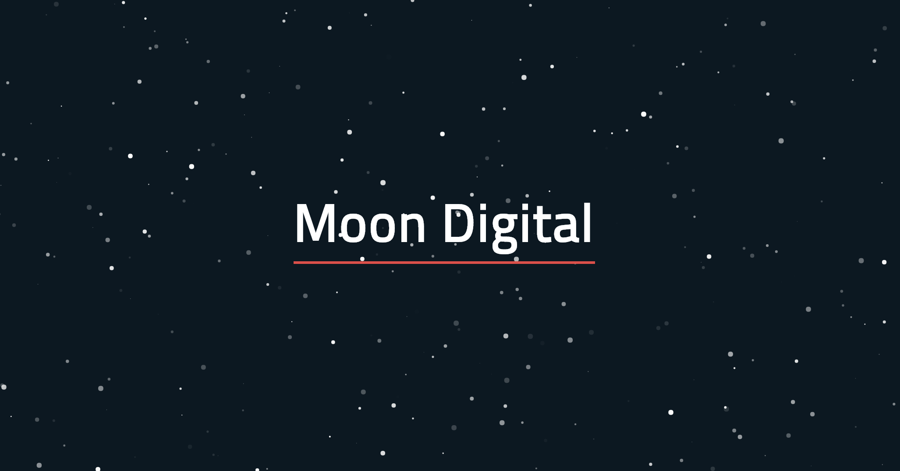

As a digital native..
My passion is to solve technical problems.
An aspiring developer and technical project manager with excellent communication
abilities and project leadership experience; as comfortable in the meeting room as in front of a code editor.
I can make things happen

Lauchlan Craig
Design Portfolio

Cumulus
Personal Project
Daryl Digital
Foodie
Personal Project
Skills & Technologies
Education
Feb 2013 - Feb 2016
Bachelor of Information Technology and Systems
Monash University
Major in Application Development,
minor in Information and Communication Technologies (ICT)